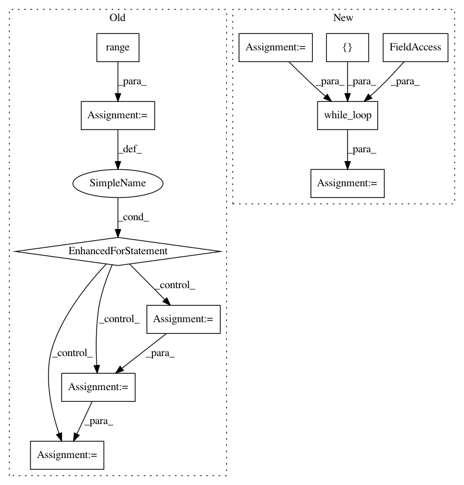

b045bf9b22832610f256da0cda16c2c007158ba6,cleverhans/attacks.py,MomentumIterativeMethod,generate,#MomentumIterativeMethod#Any#,503
Before Change
from . import loss as loss_module
from . import utils_tf
for i in range(self.nb_iter):
// Compute loss
logits = self.model.get_logits(adv_x)
loss = loss_module.attack_softmax_cross_entropy(y, logits,
mean=False)
if targeted:
loss = -loss
// Define gradient of loss wrt input
grad, = tf.gradients(loss, adv_x)
// Normalize current gradient and add it to the accumulated gradient
red_ind = list(xrange(1, len(grad.get_shape())))
avoid_zero_div = tf.cast(1e-12, grad.dtype)
grad = grad / tf.maximum(avoid_zero_div,
reduce_mean(tf.abs(grad),
red_ind, keepdims=True))
momentum = self.decay_factor * momentum + grad
if self.ord == np.inf:
normalized_grad = tf.sign(momentum)
elif self.ord == 1:
norm = tf.maximum(avoid_zero_div,
reduce_sum(tf.abs(momentum),
red_ind, keepdims=True))
normalized_grad = momentum / norm
elif self.ord == 2:
square = reduce_sum(tf.square(momentum),
red_ind,
keepdims=True)
norm = tf.sqrt(tf.maximum(avoid_zero_div, square))
normalized_grad = momentum / norm
else:
raise NotImplementedError("Only L-inf, L1 and L2 norms are "
"currently implemented.")
// Update and clip adversarial example in current iteration
scaled_grad = self.eps_iter * normalized_grad
adv_x = adv_x + scaled_grad
adv_x = x + utils_tf.clip_eta(adv_x - x, self.ord, self.eps)
if self.clip_min is not None and self.clip_max is not None:
adv_x = tf.clip_by_value(adv_x, self.clip_min, self.clip_max)
adv_x = tf.stop_gradient(adv_x)
return adv_x
def parse_params(self, eps=0.3, eps_iter=0.06, nb_iter=10, y=None,
ord=np.inf, decay_factor=1.0,
After Change
from . import loss as loss_module
from . import utils_tf
cond = lambda i, _, __: tf.less(i, self.nb_iter)
def body(i, ax, m):
preds = self.model.get_probs(adv_x)
loss = utils_tf.model_loss(y, preds, mean=False)
if targeted:
loss = -loss
// Define gradient of loss wrt input
grad, = tf.gradients(loss, adv_x)
// Normalize current gradient and add it to the accumulated gradient
red_ind = list(xrange(1, len(grad.get_shape())))
avoid_zero_div = tf.cast(1e-12, grad.dtype)
grad = grad / tf.maximum(
avoid_zero_div, reduce_mean(tf.abs(grad), red_ind, keepdims=True))
momentum = self.decay_factor * momentum + grad
if self.ord == np.inf:
normalized_grad = tf.sign(momentum)
elif self.ord == 1:
norm = tf.maximum(avoid_zero_div,
reduce_sum(tf.abs(momentum), red_ind, keepdims=True))
normalized_grad = momentum / norm
elif self.ord == 2:
square = reduce_sum(tf.square(momentum), red_ind, keepdims=True)
norm = tf.sqrt(tf.maximum(avoid_zero_div, square))
normalized_grad = momentum / norm
else:
raise NotImplementedError("Only L-inf, L1 and L2 norms are "
"currently implemented.")
// Update and clip adversarial example in current iteration
scaled_grad = self.eps_iter * normalized_grad
adv_x = adv_x + scaled_grad
adv_x = x + utils_tf.clip_eta(adv_x - x, self.ord, self.eps)
if self.clip_min is not None and self.clip_max is not None:
adv_x = tf.clip_by_value(adv_x, self.clip_min, self.clip_max)
adv_x = tf.stop_gradient(adv_x)
return i + 1, adv_x, momentum
_, adv_x, _ = tf.while_loop(
cond, body, [tf.zeros([]), adv_x, momentum], back_prop=False)
return adv_x
def parse_params(self,
In pattern: SUPERPATTERN
Frequency: 3
Non-data size: 11
Instances
Project Name: tensorflow/cleverhans
Commit Name: b045bf9b22832610f256da0cda16c2c007158ba6
Time: 2018-07-11
Author: aidan.n.gomez@gmail.com
File Name: cleverhans/attacks.py
Class Name: MomentumIterativeMethod
Method Name: generate
Project Name: XifengGuo/CapsNet-Keras
Commit Name: 5cb43a9498315a16412cba20a59e6e76f9721b7b
Time: 2017-10-31
Author: guoxifeng1990@163.com
File Name: capsulelayers.py
Class Name: CapsuleLayer
Method Name: call
Project Name: tensorflow/cleverhans
Commit Name: b045bf9b22832610f256da0cda16c2c007158ba6
Time: 2018-07-11
Author: aidan.n.gomez@gmail.com
File Name: cleverhans/attacks.py
Class Name: BasicIterativeMethod
Method Name: generate